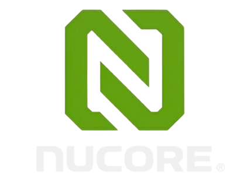

The Intelligence Layer.
AI-powered applications built to run on Nucore infrastructure.
Layer 1
Compute
Nucore GPU Systems
Layer 2
Infrastructure Software
Fleet control
Layer 3
Titan LLM + Orchestration
AI engine
Layer 4
Business Applications
Operational AI